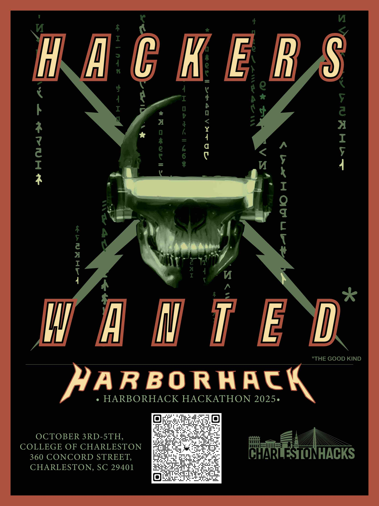

First place · Polygon — Mimic
A multiplayer social deception game involving human and AI opponents.

Event archive · October 2025
VibeHacking: creative collaboration with AI.
October 3–5, 2025 · College of Charleston, Harbor Walk
HarborHack explored building software through conversation, experimentation and iteration with AI. The weekend began with team formation, continued with a full day of building, and concluded with demos and judging.
The optional Friday learning session introduced AI tool selection, rapid prototyping, problem discovery and pitching before the hackathon kickoff.
A multiplayer social deception game involving human and AI opponents.
Transforms children's stories into AI-generated video experiences.
Student transportation coordination from car line to classroom.
All six submissions and original project credits on Devpost ↗